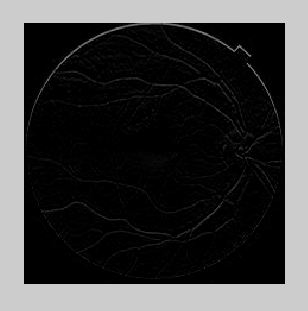
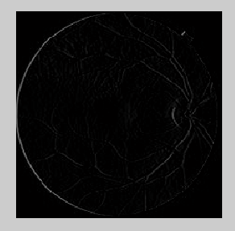
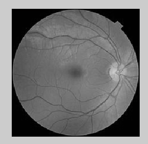

Na trzecich zajęciach laboratoryjnych miałyśmy w planach realizować kolejny punkt z instrukcji:
"Run and test reference methods for vessel extractions:matched filters,first-order derivative of the Gaussian, Matched Filter with First-
Order Derivative of Gaussian function, Frangi filtering. "
Jedanak na początek dostałyśmy za zadanie przetestowanie działania funkcji, która wykrywa krawędzie pionowe i poziome. Przy okazji powtórzyłyśmy definicje pochodnej i gradientu.
POCHODNA- tempo zmian wartości funkcji względem zmian jej argumentów. Geometrycznie, pochodna określa tangens kąta nachylenia wykresu funkcji w danym punkcie.
GRADIENT- wektor, który określa wartość i kierunek najszybszego wzrostu wielkości skalarnej.
Można powiedzieć, że gradient stanowi odpowiednik pochodnych dla funkcji wielu zmiennych.
Gdy funkcja
f(x1, x2,...,xn)
jest różniczkowalną funkcją wielu zmiennych, gradient stanowi wektor n pochodnych cząstkowych funkcji.[1]
Wektor określa kierunek największego wzrostu funkcji w danym punkcie,a długość wektora opisuje wielkość tego wzrostu.
Do wykrywania krawędzi obrazu można zastosować pierwszą pochodną funkcji opisującej zmiany stopni szarości obrazu. Jako przybliżenie pochodnej dla obrazu komputerowego można
wykorzystać gradient.[2]
Następnie zajęłyśmy się sprawdzaniem działania funkcji do detekcji krawędzi pionowych i poziomych ( przejście od obszaru ciemnego do jasnego lub na odwrót) .
Fragment kodu :
for i = 1:(size(picture,1)-2)
for j = 1:(size(picture,2)
moved_picture(i,j) = picture(i+2,j);
end
end
for i = 1:(size(picture,1))
for j = 1:(size(picture,2)-2)
moved_picture1(i,j) = picture(i,j+2);
end
end
Zostało tu wykorzystana pętla 'for', związana z analizą wierszy i kolumn punktów obrazu.
Aby pokazać na obrazie określone krawędzie, należy wykonać odejmowanie od przesuniętego obrazu.
edge_picture1 = moved_picture - picture;
edge_picture2 = moved_picture1 - picture;
Rezultatem działania funkcji są następujące obrazy


dla obrazu oryginalnego

Na podstawie dogłębnej analizy powyższych obrazów można stwierdzić, że zostało wykonane zadanie wykrycia krawędzi pionowych, jak i poziomych. Nie są to oszałamiające wyniki.
Prawdopodobnie zmniejszenie ilości szumów mogłoby dać bardziej zadowalające wyniki.